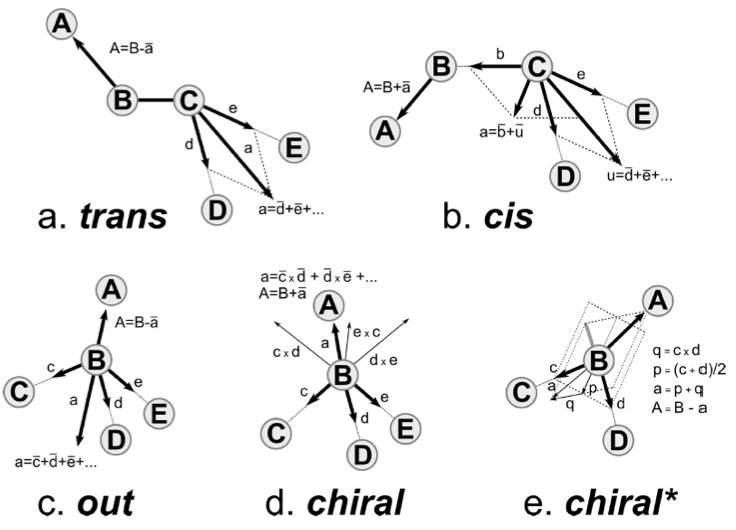
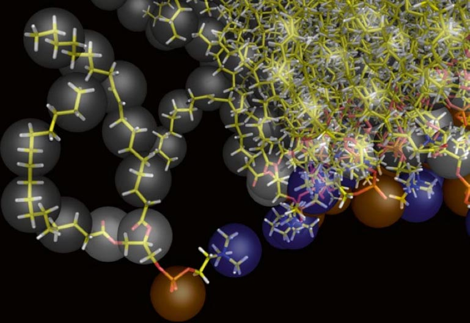

Reverse coarse-graining with Backward
In case of issues, please contact t.a.wassenaar@rug.nl.
Summary
Introduction
Backmapping or reverse coarse-graining or fine-graining a coarse-grained (CG) structure requires a correspondence between the two models; i.e., for atomistic and CG: which atoms make up which bead. Actually, an atom can in principle contribute to several beads. A backmapping protocol needs to know at least which atoms contribute to which bead. Existing schemes then use rigid building blocks anchored on the CG bead, or place the atoms randomly near the bead in an initial guess and the structure is relaxed based on the atomistic force field, usually by switching it on gradually. The method used in this tutorial is backward[1], developed by Tsjerk Wassenaar. Backwards allows for an intelligent, yet flexible initial placement of the atoms based on the positions of several beads, thereby automatically generating a very reasonable orientation of the groups of atoms with respect to each other.
First, we go over the scripts used in the backward[1] method. Second, we describe the structure and setup of the needed CG to fine-grained mapping files, taking the mapping file for Martini 2 valine as an example. Last, we demonstrate the method by backmapping a CG membrane embedded aquaporin 1, as described in[2].
More extensive discussion and examples, including tutorial material can be found in the paper by Wassenaar et al.[1], and Supporting Material to that paper.
The backward method
The backward program is available here, and consists of three scripts and a number of CG to fine-grained mapping definition files. The scripts are backward.py, initram.sh and the Mapping directory __init__.py and a number of .map files. The .map files describe the CG to fine-grained mapping and a file needs to be provided for each molecule (or it’s building blocks) in your system. The__init__.py script interprets the .map files. The backward.py script performs the actual backmapping and initram.sh is a bash wrapper that runs a series of minimizations and molecular dynamics steps, using the fine-grained force field to push the initial backmapped structure to one that satisfies the fine-grained force field.
Mapping files
A requirement for the procedure to work is that the subdirectory Mapping contains definitions for how the atomic positions are generated from the CG positions. The subdirectory Mapping distribuited with backward contains a file for each residue and/or molecule that can be backmapped from Martini 2, which is named for the atomistic target force field, e.g. val.oplsaa.map for a valine residue targeted to OPLS-AA. The structure of a .map file is explained below for the valine residue. The file val.oplsaa.map reads:
[ molecule ]
VAL
[ martini ]
BB SC1
[ mapping ]
oplsaa
[ atoms ]
1 N BB
2 H BB
3 CA BB
4 HA BB
5 CB SC1 BB
6 HB SC1 BB
8 CG1 SC1
9 HG11 SC1
10 HG12 SC1
11 HG13 SC1
12 CG2 SC1
13 HG21 SC1
14 HG22 SC1
15 HG23 SC1
16 C BB
17 O BB
[ chiral ]
CB CA N C
HB CA N C
[ chiral ]
HA CA N CB C ;L-Val
;HA CA N C CB ;D-Val
[ out ]
CG2 CB CG1 CA
HG21 CB CG1 CA
HG22 CB CG1 CA
HG23 CB CG1 CADirectives analogous to gromacs topologies contain specifications that build the atomistic structure from the CG positions. The [ molecule ] directive contains the name of the residue or molecule. The [ martini ] directive contains the names of the CG beads in the Martini model: valine has two beads called BB and SC1. The [ mapping ] directive contains the name of the object model. Note that this directive may contain multiple object models. If you do not care for the naming convention of different force fields, you can use the same mapping file for the CHARMM36 and OPLS-AA/L force fields, because these are both all-atom models which in the GROMACS implementation also use the same order of the atoms (if not the same names). Thus, the mapping files for the methylated terminal ends explicitly state that they can be used for mapping to both OPLS-AA and CHARMM36 force fields.
The [ atoms ] directive contains the index numbers and names of the atoms in the object model and their relation to the CG beads. Note that a single atom may be in a relation with more than one CG bead. The back-mapping procedure starts by putting each atom that is related to a single bead on the position of that bead. If an atom is related to more than one bead, it will be placed on the weighted average position of the beads listed. It is allowed to list the same bead multiple times; thus the line:
4 OE1 BB BB BB SC1 SC1places the fourth atom (with name OE1) of the residue on the line connecting the BB and SC1 beads at 2/5 of the distance between the beads, starting at the BB bead. This mechanism is a simple aid to position atoms already at fairly reasonable starting positions. Using the -kick flag displaces all atoms randomly after their initial placement. Note that the script applies a random kick to atoms that are initially put at exactly the same place, e.g. because they are defined by the position of a single bead. Thus, no two atoms will be on top of each other. Switching on an atomistic force field usually results in an error if two interacting atoms are at exactly the same place.
The backward procedure implements a few other more sophisticated mechanisms to place atoms and some are used in the valine residue. Implementation can be found in the file Mapping/__init__.py. The [ chiral ] directive generates stereochemically specifically arranged groups of atoms. As is seen for valine, two types of input can be provided. In the first instance of the [ chiral ] directive, four atoms are listed on a line. The first atom is the atom to be placed (named A in Fig. 1e, chiral*) on the basis of the positions of the other three. The figure shows how vectors are defined from the positions of the other three particles to construct the position of the first atom. In the second instance of the [ chiral ] directive, five atoms are listed on a line. This corresponds to the construction shown in Fig. 1d, chiral. The [ out ] directive may be used to spread out several equivalent atoms (as on a CH3-group) away from the center of the bead in a reasonable manner, as shown in Fig. 1c, out. Again, be aware that atoms initially placed on the same spot, are randomly displaced; therefore, using the same reference atoms as in the example still leads to different positions for the generated atoms.

Backmapping Aquaporin 1
Here we backmapp a CG membrane embedded aquaporin 1 into CHARMM36 atomistic coordinates, as described in[2]. The files for this part of the tutorial are available in aquaporine_backmap.zip. Missing residues were added to aquaporin 1 and it was converted to Martini CG coordinates, solvated in a CG POPC bilayer with ions and polarizable water. Then simulated for 100 ns at the CG level with position restrains on the protein, see[2] for method details and CG_posre.gro for final coordinates. Note, without position restrains on the protein the CG protein might (depending on the protein in question and the CG force field used) evolve to far away from a possible fine-grained structure, rendering backmapping impossible.
We are going to use the initram.sh script, which calls backward.py and then runs a series of minimization and equilibrium simulations to get the final backmapped structure. To run the script we need the following:
The CG structure to backmapp, provided in
CG_posre.gro.A complete fine-grained force field corresponding to all the CG molecules in
CG_posre.gro. Here we use CHARMM36, see all.itpfiles provided andtopol.top, which contains the molecules in the same order they are present inCG_posre.groand with the same names. Note, water and ions can be skipped in the.topfiles as they are automatically detected bybackward.py.A
.mapfile in the Mapping directory for all residues and molecules to be backmapped (water and ions can also be skipped here as their definitions are included inbackward.py).The
initram.shscript uses the gromacs package so a proper version needs to be sourced.
Run the script using the following command:
./initram.sh -f CG_posre.gro -o aa_charmm.gro -to charmm36 -p topol.topAfter successful backmapping the aa_charmm.gro file will contain POPC membrane embedded aquaporin 1 as well as the solvent at fully atomistic resolution according to the CHARMM36 force field. Fig. 2 illustrates the backmapping of a few POPC molecules. When running the backmapping script please keep in mind that initram.sh generates a significant number of temporary files so backmapping in a separate directory can be a good idea and that backward.py used random kicks to initially displace the atoms so rerunning the same command can give different results (and even though some runs might results in an error others may not).

Backmapping from Martini 3
Backmapping from Martini 3 configurations follows the same procedure described above. You only need to chage your mapping files. You can find a beta version of the Mapping files to backmap to CHARMM36 here.
Tools and scripts used in this tutorial
GROMACS(http://www.gromacs.org/)backward(downloadable here)
References
[1] Wassenaar, T. A., Pluhackova, K., Böckmann, R. A., Marrink, S. J., & Tieleman, D. P. (2014). Going Backward: A Flexible Geometric Approach to Reverse Transformation from Coarse Grained to Atomistic Models. Journal of Chemical Theory and Computation, 10(2), 676–690. https://doi.org/10.1021/ct400617g
[2] Wassenaar, T. A., Pluhackova, K., Moussatova, A., Sengupta, D., Marrink, S. J., Tieleman, D. P., & Böckmann, R. A. (2015). High-Throughput Simulations of Dimer and Trimer Assembly of Membrane Proteins. The DAFT Approach. Journal of Chemical Theory and Computation, 11(5), 2278–2291. https://doi.org/10.1021/ct5010092